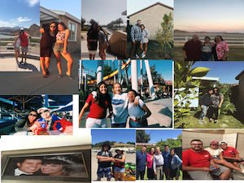

My family includes Me the youngest 13, and my older brother Zach 15, also my oldest brother Andrew 22 and on top of that My mother Martha and My Dad Abel. We all love to travel to laughlin Nevada and ride our boat. Also go to church on sundays and after go eat :) My family is from Mexico, and my father and mother are still happily together 25 years later. I am so grateful for the family and fortunate for my family, loves to eat, and when i mean love i mean LOVE.
